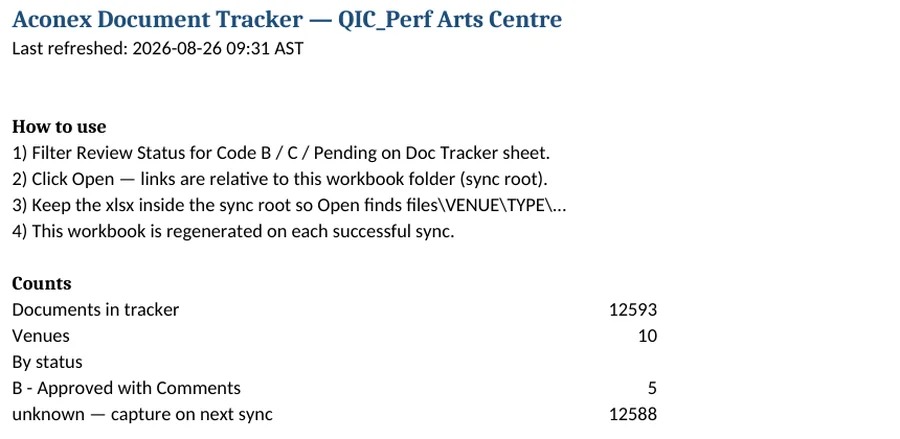

D.01 / Document control & automation
Engineering document retrieval
A practical document workflow built around how engineers search for drawings, revisions, and technical records.
- MY ROLE
- Process design · Development
- DISCIPLINE
- Construction / Document control
- PERIOD
- 2026
- ISSUE STATUS
- Delivered system

The task
A document register and a downloaded working set answer different questions. Engineers needed a way to locate the actual file, identify its revision, and navigate by project references.
My contribution
I developed a pipeline that reads the document register, classifies records, and uses file hashes to distinguish revisions from repeat downloads. I then built a browser index for searching and filtering the working set.
What I delivered
- Document classification by project numbering and discipline.
- Revision handling and a record of processing actions.
- A generated tracker and a searchable offline file index.
The result
The published project snapshot records 12,593 indexed documents and a searchable working set of 1,741 files. The interface gives the team a direct route from a reference to the document.
Figures describe the documented project snapshot, not a live counter on this portfolio.
